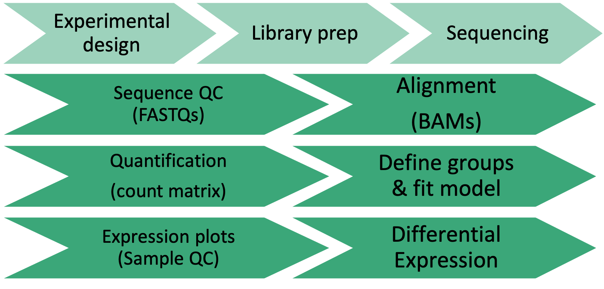

Computational Foundations Workshop
UM Bioinformatics Core
Wrapping up
We hope you now have more familiarity with key concepts, data types, tools, and how they all connect to enable gene expression analysis from bulk RNA-Seq data.

Housekeeping
Please take our optional post-workshop survey (5-10 minutes)
We will email you a link to the final session recordings by next week.
The website/notes for this workshop and UMcoderspaces Slack channel channel will be available.
Looking ahead
Workshop environment
BASH/RStudio workshop compute environment will be available until next Monday.
You can download files from the workshop environment from your terminal/command line window as below. (You will need to substitute your actual workshop username and type workshop password when prompted.)
mkdir 2021-11-15-rnaseq-demystified-workshop scp -r YOUR_USERNAME@bfx-workshop01.med.umich.edu:"data analysis *-umich-rnaseq-demystified" 2021-11-15-rnaseq-demystified-workshop- Note that the full download is about 2Gb, so depending on your internet speeds it could take while.
Installing software locally
- You can install necessary programs to run programs locally. Note that for typical data, the compute intensive steps (Day 1) assume your computer has powerful compute (many CPUs and lots of RAM) and sizable storage capacity. (i.e. It may not be practical to run these on your laptop.)
- Installing bioinformatics software is non-trivial and comprehensive instructions to setup a complete compute environment are outside the scope of this workshop. (We are considering offering a Computational Reproducibility workshop that would cover this.) For the intrepid, see relevant links below:
Great Lakes at University of Michigan
- Advanced Research Computing (ARC) at University of Michigan hosts a high-performance computing (HPC) platform called Great Lakes which combines high-end computers, fast/resilient storage, and pre-installed software. GreatLakes may be a good resource for folks who need to run the more compute intensive steps and a substantial block of compute and storage is subsidized by ARC making it essentially free to many researchers.
- About Great Lakes HPC.
- About the ARC Research Computing Package.
- Videos on getting started with Great Lakes. (available to UM folks)
- Upcoming ARC workshops.
Training and support
- Learning bioinformatic analyses more like a process than a task. Resources to consider:
- UM Bioinformatics Core links to training resources/workshops
- UM CoderSpaces Slack and UM CoderSpaces “office hours”.
- For intro lessons and workshops in Bash / Git / R / Python : Software Carpentry and the UM Software Carpentry Group.
- For more info on NGS analysis, we can highly recommend training materials from the Harvard Chan Bioinformatics Core.
Thank you

Sponsors
 |
 |
 |
|---|---|---|
| Chris | Marci | Travis |
 |
||
| Dana | Becky | Grace |
 |
 |
 |
| Nick | Raymond | Weisheng |
YOU!
Thank you for participating on our workshop. We welcome your questions and feedback now and in the future.
Bioinformatics Workshop Team
bioinformatics-workshops@umich.edu
https://brcf.medicine.umich.edu/bioinformatics